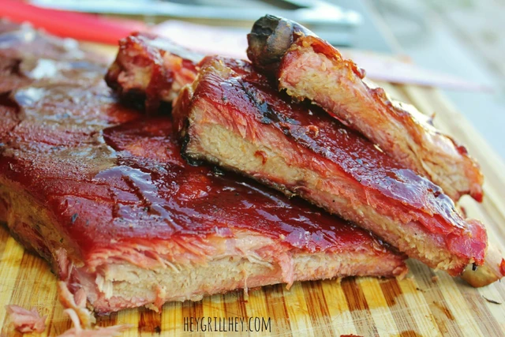

Smoked Foil Wrapped Ribs

Description
Today, I’m showing you an amazing method for smoking ribs: the fool proof 3 2 1 ribs recipe. This method has gained a lot of popularity with home cooks in recent years because of the flawless results in churning out super tender ribs that fall off the bone every time.
While competition and traditional BBQ cooks will scoff at fall off the bone ribs, the truth is that most people really like them that way. Judges for KCBS won’t give you a winning score, but they also won’t be hanging out in your backyard critiquing what you and your family are eating. So I say, cook what you like!
Ingredients
- 1 rack baby back ribs
- 2 tbsp Signature Sweet Rub
- 1 cup apple cider (apple juice also works)
- 1/4 cup dark brown sugar
- 2-3 tbsp salted butter
- 1/2 cup BBQ sauce
Steps
- Liberally season both sides of the ribs using the sweet rub, starting with the bone side.
- Prepare your smoker for indirect smoking. Target temperature is between 180-200 with thin blue smoke. Place the seasoned ribs on the smoker and close the lid. Leave them to smoke for 3 hours.
- Tear off a large piece of aluminum foil and place it on a large working surface. Transfer the ribs to the foil bone side up so the bones don't tear through the foil. Sprinkle with the brown sugar, top with the butter cut into small pads, and then pour over the apple cider.
- Tightly crimp the foil together to create an airtight seal. Return to the grill and increase your cooking temperature to as close to 225 degrees as you can get it. Let the ribs braise for 2 hours in the foil.
- Carefully remove the ribs from the grill and place on a large working surface. Open the foil package (be careful of hot steam) and use tongs to remove the ribs and place them back on the grill, bone side down. Discard the foil and excess cooking liquid
- Brush the ribs with your favorite BBQ sauce, close the lid of your grill and cook at 225 degrees for an additional hour until the ribs are done to your desired tenderness and the sauce is sticky and set.